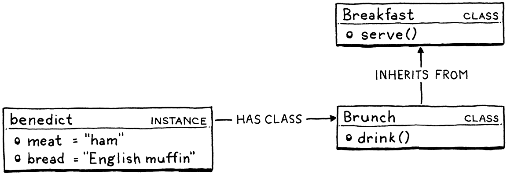
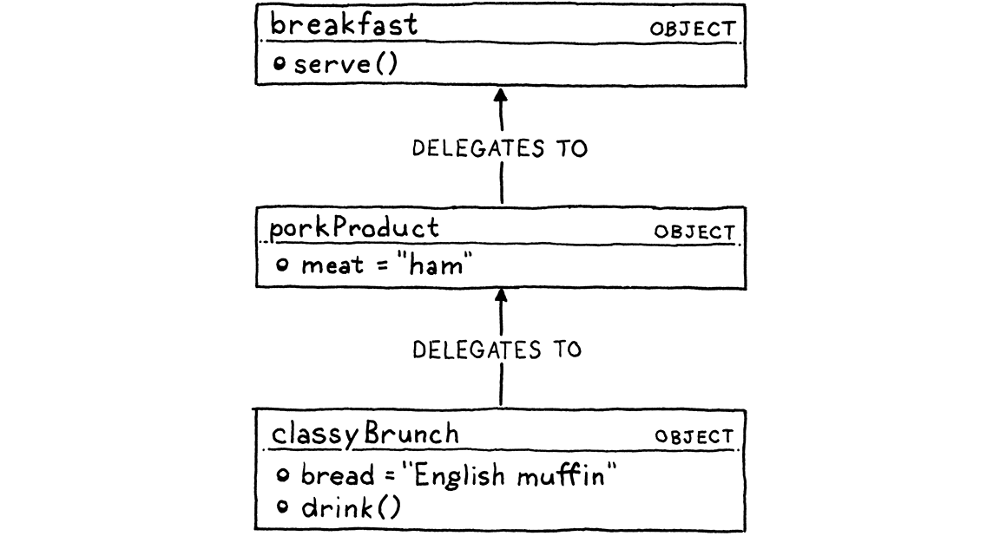

Lox 语言
对一个人来说，还有什么事能比给他做顿早餐更让他高兴的呢？
安东尼·伯丁
本书剩下的篇幅，我们会去照亮 Lox 语言的每一个阴暗角落，不过一上来就让你埋头给解释器写代码、 连我们要造的东西长什么样都不给你看上一眼，也实在有点残忍。
话虽如此，我也不想在你还没摸到你的文本编辑器之前，先把你拖过一 大堆语言律师文书和规范黑话。所以这会是一篇温和友好的 Lox 入门。它会省掉很多细节和边缘情况。 那些我们以后有的是时间再讲。
3 . 1你好，Lox
这就是你的第一口 Lox：
// 你的第一个 Lox 程序！ print "Hello, world!";
那条 // 行注释和结尾的分号已经说明，Lox 的语法属于 C 家族。（字符串外面没有括号，因为
print 是一条内置语句，不是一个库函数。）
现在，我可不打算说 C 的语法有多棒。要是我们想要一门雅致的语言， 大概会去模仿 Pascal 或者 Smalltalk。要是再往北欧家具式的极简走一步，那就该做一门 Scheme。 这些语言各有各的好处。
而 C 家族语法真正给我们的，是另一样在语言里往往更有价值的东西：熟悉感。我知道你已经 对这种风格游刃有余了，因为我们要用来实现 Lox 的那两门语言——Java 和 C——也都是从它 那儿继承来的。给 Lox 沿用同样的语法，你就少了一件要学的东西。
3 . 2一门高级语言
虽然这本书最后比我希望的厚了不少，但它还是不够大，装不下 Java 那样庞大的语言。为了在这几页 里塞进 Lox 的两套完整实现，Lox 本身就不得不相当紧凑。
一说到又小又有用的语言，我脑子里冒出来的都是 JavaScript、Scheme 和 Lua 这样的高级「脚本」语言。这三门里，Lox 看着最像 JavaScript，主要是因为大多数 C 语法语言都像。后面我们会学到，Lox 处理作用域的办法紧贴着 Scheme。将在第三部分 里造的 C 版 Lox，则大量借鉴自 Lua 那套干净高效的实现。
Lox 在另外两个方面，也跟上面那三门语言一样：
3 . 2 . 1动态类型
Lox 是动态类型的。变量可以存任何类型的值，同一个变量甚至可以在不同时间存不同类型的值。 要是你拿类型不对的值去做运算——比如说，拿一个数字去除一个字符串——那错误要到运行时才会 被发现、报出来。
喜欢静态类型的理由有一大把，但它们还不足以盖过给 Lox 挑动态 类型的那些讲实用的理由。一套静态类型系统，学起来和实现起来都是一大堆活儿。跳过它，你就 得到一门更简单的语言和一本更薄的书。把类型检查推迟到运行时，我们的解释器能更早跑起来、 执行代码。
3 . 2 . 2自动内存管理
高级语言的存在，就是为了消灭那些容易出错、又没技术含量的底层苦活。手动管理存储的分配和
释放，还有什么能比这更烦人？没人会迎着清晨的太阳起床，然后喊「我等不及要去弄清楚今天分配
的每一个字节该在哪儿调 free() 了！」
管理内存的办法主要有两种技术：引用计数，和追踪式垃圾回收 （通常就叫垃圾回收或者 GC）。引用计数实现起来简单得多——我想这就是 Perl、PHP 和 Python 一开始都用它的原因。但时间一长，引用计数的局限就变得太麻烦了。这些语言后来全都加上 了完整的追踪式 GC，或者至少加了够清理对象环用的那一部分。
追踪式垃圾回收的名声挺吓人。在原始内存的层面上干活，确实有点让人发怵。调试一个 GC，有时候 会让你梦里都在看十六进制转储。但别忘了，这本书就是要驱散魔法、宰掉那些怪物的，所以我们是 要自己写一个垃圾回收器的。我觉得你会发现那个算法相当简单，而且实现起来乐趣十足。
3 . 3数据类型
在 Lox 这个小宇宙里，组成万物的原子就是内置数据类型。它们只有几种：
-
布尔值。 不写逻辑就没法编程，不做逻辑就没有布尔值。
true和false，软件里的阴与阳。不像某些古老语言那样征用一个现成的类型来表示真与假， Lox 有专门的布尔类型。这次远征我们可能是在凑合着过，但我可不是野蛮人。布尔值当然有两个，每个都配一个字面量：
true; // 才不是 false 呢。 false; // 可不是「不是 false」！
-
数字。 Lox 只有一种数字：双精度浮点数。由于浮点数也能表示范围很大的整数，这一条 就够覆盖大片地盘了，同时又让事情保持简单。
功能齐全的语言有一大堆数字语法——十六进制、科学计数法、八进制，各种好玩的玩意儿。 我们凑合用基本的整数和十进制字面量就够了。
1234; // 一个整数。 12.34; // 一个小数。
-
字符串。 第一个例子里我们已经见过一个字符串字面量了。和大多数语言一样，它们用双引号 括起来。
"I am a string"; ""; // 空字符串。 "123"; // 这是字符串，不是数字。
等我们动手实现它们的时候你会看到，那串看着人畜无害的字符里， 藏着相当多的复杂性。
-
nil。 还有最后一个内置值，它从没被邀请来过这个派对，却总是不知道从哪儿冒出来。 它表示「没有值」。在别的很多语言里，这东西叫「null」。在 Lox 里我们写作nil。 （等我们实现它的时候，这样能把「我们在说 Lox 的nil」和「我们在说 Java 或 C 的null」区分开。）一门语言不设空值，是有充分理由的——空指针错误是我们这行的祸根。要是我们做的是一门 静态类型语言，那值得试着禁掉它。可在动态类型的语言里，禁掉它往往比留着它还更烦人。
3 . 4表达式
要是内置数据类型和它们的字面量是原子，那表达式一定就是分子。下面这些大多你很熟悉。
3 . 4 . 1算术
Lox 配齐了你从 C 和别的语言里又爱又熟的那套基本算术运算符：
add + me; subtract - me; multiply * me; divide / me;
运算符两边的子表达式叫操作数。因为它们有两个，所以这些叫二元运算符。 （跟「二进制」在一和零意义上的用法毫无关系。）又因为运算符被固定在 操作数的中间，这些也叫中缀运算符（相对于运算符在操作数之前的前缀运算符， 以及在其之后的后缀运算符）。
有一个算术运算符其实既是中缀又是前缀。那个 - 运算符还能用来对数字取负。
-negateMe;
这些运算符全都作用于数字，喂给它们的任何其他类型都是错误。例外是 +——你还可以喂给它
两个字符串，把它们拼起来。
3 . 4 . 2比较与相等
再往前走一点，我们还有几个运算符，它们的返回值总是布尔值。我们可以比较数字（而且只能是 数字），用的是那套「Ye Olde」式的古老比较运算符。
less < than; lessThan <= orEqual; greater > than; greaterThan >= orEqual;
我们可以拿任意两个值来测相等和不等。
1 == 2; // false. "cat" != "dog"; // true.
哪怕类型不同也行。
314 == "pi"; // false.
不同类型的值永远不等价。
123 == "123"; // false.
我一般来说反对隐式转换。
3 . 4 . 3逻辑运算符
取非运算符是个前缀 !，操作数为真时它返回 false，反之亦然。
!true; // false. !false; // true.
另外两个逻辑运算符，其实就是披着表达式外衣的控制流结构。一个 and
表达式判断两个值是否都为真。如果左操作数为假，它就返回左操作数，否则返回右操作数。
true and false; // false. true and true; // true.
而一个 or 表达式判断两个值里是否有（或者两个都是）为真。如果左操作数为真，它就
返回左操作数，否则返回右操作数。
false or false; // false. true or false; // true.
and 和 or 之所以像控制流结构，是因为它们会短路。and 不光在左操作数为假时返回左
操作数，那种情况下它干脆连右操作数都不求值。反过来说（用逆否命题的方式讲？），
如果一个 or 的左操作数为真，右边就被跳过了。
3 . 4 . 4优先级与分组
这些运算符的优先级和结合性，全都是你从 C 那边带来的预期值。（等我们讲到语法解析，会
精确得多。）在优先级不是你想要的时候，你可以用 () 把东西括起来。
var average = (min + max) / 2;
由于它们在技术上实在没什么意思，我把通常那套运算符动物园的其余部分，从我们这门小语言里 剔出去了。没有位运算、移位、取模，也没有条件运算符。我不打分，不过你要是给自己的 Lox 实现加上它们，能在我这儿加印象分。
那些就是表达式的各种形态了（除了几个跟后面才会讲到的特性相关的），所以我们往上一层。
3 . 5语句
现在说到语句了。表达式的主要活儿是产出值，语句的活儿则是产生效果。既然按定义语句 不求值成什么东西，那要想有用，它就得以别的方式改变世界——通常是改动某种状态、读取输入， 或者产出输出。
你已经见过两种语句了。第一种是：
print "Hello, world!";
一条 print 语句对单个表达式求值，并把结果显示给用户。你也见过
这样一些语句：
"some expression";
一个表达式后面跟个分号（;），就把它提升到了语句身份。这东西被叫作（名字起得够有想象力
的）表达式语句。
要是你想把一串语句打包塞进一个只该有一条语句的地方，你可以把它们包进一个块。
{
print "One statement.";
print "Two statements.";
}
块还会影响作用域，这就引出了下一节……
3 . 6变量
你用 var 语句来声明变量。要是你省掉初始化器，变量值就默认为
nil。
var imAVariable = "here is my value"; var iAmNil;
一旦声明好了，你自然就可以用变量名来访问和赋值。
var breakfast = "bagels"; print breakfast; // "bagels". breakfast = "beignets"; print breakfast; // "beignets".
变量作用域的规则我这儿就不展开了，因为后面几章我们会花惊人的时间来把那些规则一寸一寸地 测绘一遍。多数情况下，跟你在 C 或 Java 里养成的预期一样。
3 . 7控制流
要是没法跳过一段代码，或者没法把一段代码多执行几遍，就很难写出有用 的程序。这就意味着控制流。除了前面已经讲过的逻辑运算符，Lox 还直接从 C 搬来了三条语句。
一条 if 语句根据某个条件，执行两条语句中的其中一条。
if (condition) { print "yes"; } else { print "no"; }
一个 while 循环只要条件表达式求值为真，就反复执行循环体。
var a = 1; while (a < 10) { print a; a = a + 1; }
最后，我们还有 for 循环。
for (var a = 1; a < 10; a = a + 1) { print a; }
这个循环干的事跟前面那个 while 循环一样。大多数现代语言还都有某种 for-in
或者 foreach 循环，用来显式地遍历各种序列类型。在一门真正的语言里，那比我们这里这个
粗糙的 C 风格 for 循环要好。Lox 保持基本款。
3 . 8函数
函数调用表达式看起来跟在 C 里一模一样。
makeBreakfast(bacon, eggs, toast);
你也可以调用一个函数而不给它传任何东西。
makeBreakfast();
跟 Ruby 之类的语言不一样，这种情况下的括号是必须的。你要是省掉括号，那个名字就不 调用函数，只是指代它。
一门语言要是不能让你定义自己的函数，那就没多大意思。在 Lox 里，你用 fun
来做这件事。
fun printSum(a, b) { print a + b; }
现在是时候理清几个术语了。有些人对「形参（parameter）」和 「实参（argument）」这两个词混用，在很多人看来它们也确实可以互换。可我们后面要花很多时间 把最细的绒毛一根根劈开来辨语义，所以先把词磨利。从这儿开始：
-
实参（argument）是你调用函数时传给它的实际值。所以函数调用带的是一份 实参列表。有时候你会听见有人管这些叫实际参数。
-
形参（parameter）是函数体内部持有那个实参值的变量。所以函数声明带的是一份 形参列表。别人管这些叫形式参数，或者干脆叫 formals。
函数体永远是一个块。在它里面，你可以用一条 return 语句返回一个值。
fun returnSum(a, b) { return a + b; }
要是执行到了块的末尾却没撞上 return，就会隐式地返回 nil。
3 . 8 . 1闭包
函数在 Lox 里是一等公民，说白了就是它们是真正的值，你能拿到引用、存进变量、到处传递 等等。下面这样能跑：
fun addPair(a, b) { return a + b; } fun identity(a) { return a; } print identity(addPair)(1, 2); // 打印出 "3"。
由于函数声明是语句，你可以在另一个函数里声明局部函数。
fun outerFunction() { fun localFunction() { print "I'm local!"; } localFunction(); }
要是你把局部函数、一等函数和块作用域三者放在一起用，就会撞上这样一种有意思的情况：
fun returnFunction() { var outside = "outside"; fun inner() { print outside; } return inner; } var fn = returnFunction(); fn();
这里，inner() 访问了一个在外层函数里声明、但不在自己函数体内的局部变量。这合规吗？既然
如今这么多语言都从 Lisp 借去了这个特性，你大概已经知道答案是合规的了。
要让它跑得通，inner() 就必须「抓住」它用到的每一个外层变量的引用，好让它们在外层函数
已经返回之后还能继续存在。我们把这样的函数叫做 闭包。
如今这个词常常被用来指任何一等函数，不过如果那个函数恰好没捕获任何变量的话，这算是个
误称。
你可以想象，实现这些东西会添上一些复杂度，因为我们再也不能假定变量作用域严格像一座栈那样 工作了——局部变量不会在函数返回的那一刻就蒸发掉。接下来我们会有一段愉快的时光，学习怎么 把这些东西做得既正确又高效。
3 . 9类
由于 Lox 既有动态类型、又有词法（大致就是「块」）作用域、还有闭包，它离成为一门函数式 语言大概也就差一半。但正如你会看到的，它离成为一门面向对象语言，也差不多是差一半。 这两种范式都有大把的好处，所以我觉得各拿一点写进书里是值得的。
既然类一直因为名不副实而挨骂，让我先解释一下我为什么还是把类放进了 Lox 和这本书。其实 这里有两个问题：
3 . 9 . 1为什么会有语言想搞成面向对象的？
如今像 Java 这样的面向对象语言都已经完全商业化了，只开体育馆演唱会，嘴上说喜欢它们已经不时 髦了。那谁还会做一门新的带对象的语言？那不是跟用八轨磁带发唱片一样吗？
九十年代那阵「什么都继承、永远在继承」的狂热，确实搞出了一些怪物般的类层级结构，但 面向对象编程（OOP）到现在依然很顶。几十亿行成功代码都是用 OOP 语言写的，上百万个 应用因此交付到了开心的用户手中。今天还在写代码的程序员里，很可能大多数用的就是面向对象 语言。他们总不可能全都错得那么离谱吧。
具体到一门动态类型的语言，对象相当好用。我们需要某种方式来定义复合数据类型，把一堆 东西打包捆在一起。
如果我们还能把方法挂到这些东西上，那就不用再给每个函数名前面都缀上它所操作的数据类型名，
来避免跟别的类型的同名函数撞车了。在 Racket 之类的语言里，你会被迫把函数起成
hash-copy（复制哈希表）和 vector-copy（复制向量）这样的名字，好让它们互不干扰。方法
的作用域是对象，这个问题就没了。
3 . 9 . 2为什么 Lox 是面向对象的？
我本可以说对象很酷，但它们仍然超出了本书的范围。大多数编程语言书——尤其是那些试图实现 一整门语言的书——都不讲对象。在我看来，这意味着这个话题没被讲好。一个这么普及的范式， 被这样漏掉，我挺难过的。
考虑到我们当中有那么多人整天都在用 OOP 语言，这世界似乎可以稍微补一点关于怎么造 一门这样的语言的资料。正如你将看到的，这事儿挺有意思的。没有你担心的那么难，但也没有你 以为的那么简单。
3 . 9 . 3类还是原型
说到对象，其实有两套路子，类和原型。类出现得更早，而且靠着 C++、Java、C# 之类的家伙，比原型常见得多。原型在 JavaScript 阴差阳错地接管世界之前，几乎 是被彻底遗忘的旁支。
在基于类的语言里，有两个核心概念：实例和类。实例保存每个对象的状态，并且持有一个指向 自己那个类的引用。类里装着方法和继承链。要在实例上调用一个方法，总归要绕一层间接。你得 查找这个实例的类，然后到那里去找方法：

基于原型的语言把这两个概念揉到了一起。它们只有对象——没有类 ——而且每个对象自己都可以含有状态和方法。对象之间可以直接继承（用原型那一套行话说是 「委托给」）：

这意味着在某些方面，原型式语言比类更根本。它们实现起来非常漂亮，因为它们就是简单。 而且它们能表达大量奇特的模式，而类是把你从这些模式上引开的。
不过我翻过的原型式语言代码实在太多了——包括我自己设计的一些。你知道大家 一般拿原型的那一身力量和灵活性来干什么吗？……他们用它们来重新发明类。
我不知道为什么会这样，但人似乎天生就更偏好基于类的（Classic？Classy？）风格。原型 在语言里确实更简单，可它们似乎只是靠把复杂度推给用户才 做到的。所以对 Lox 来说，我们替用户省了这个麻烦，直接把类烤进去。
3 . 9 . 4Lox 里的类
理由说够了，看看我们实际手上有什么。在大多数语言里，类是一大群特征的集合。对 Lox，我只挑 了我认为最亮的几颗星。类和方法这样声明：
class Breakfast { cook() { print "Eggs a-fryin'!"; } serve(who) { print "Enjoy your breakfast, " + who + "."; } }
类体里装着它的方法。方法看起来像函数声明，只是没有 fun 关键字。
类声明执行的时候，Lox 会造出一个类对象，把它存进一个以类名命名的变量里。跟函数一样，类
在 Lox 里也是一等公民。
// 把它存进变量。 var someVariable = Breakfast; // 把它传给函数。 someFunction(Breakfast);
接下来，我们需要一种造实例的办法。我们本可以加个 new 之类的新关键字，但为了简单起见，
在 Lox 里，类自己就是造实例的工厂函数。把一个类当函数那样调用，就会造出一个属于它自己的
新实例。
var breakfast = Breakfast(); print breakfast; // "Breakfast instance".
3 . 9 . 5实例化与初始化
只有行为的类没什么用武之地。面向对象编程背后的想法，是把行为和状态一起封装起来。 要这么做，你就需要字段。Lox 跟别的动态类型语言一样，允许你往对象上随便加属性。
breakfast.meat = "sausage"; breakfast.bread = "sourdough";
给一个字段赋值，如果它还不存在，就会把它创建出来。
如果你想在方法里访问当前对象的某个字段或方法，就用那个老可靠的 this。
class Breakfast { serve(who) { print "Enjoy your " + this.meat + " and " + this.bread + ", " + who + "."; } // ... }
把数据封装在对象里，有一部分是得保证对象在被创建的时候处于一个有效状态。要做到这一点，
你可以定义一个初始化器。如果你的类里有个叫 init() 的方法，那么对象被构造的时候它会自动
被调用。传给类的任何参数，都会转发给它的初始化器。
class Breakfast { init(meat, bread) { this.meat = meat; this.bread = bread; } // ... } var baconAndToast = Breakfast("bacon", "toast"); baconAndToast.serve("Dear Reader"); // "Enjoy your bacon and toast, Dear Reader."
3 . 9 . 6继承
每一种面向对象语言都让你不只能定义方法，还能把它们复用到多个类或多个对象上。为此，Lox 支持
单继承。当你声明一个类时，可以用一个小于号 （<）运算符指定它
继承自哪个类。
class Brunch < Breakfast { drink() { print "How about a Bloody Mary?"; } }
在这儿，Brunch 是派生类或者说子类，Breakfast 是基类或者说超类。
超类里定义的每一个方法，对它的子类来说同样可用。
var benedict = Brunch("ham", "English muffin"); benedict.serve("Noble Reader");
连 init() 方法也会被继承。实践中，子类通常也想定义自己的
init() 方法。但原先那个也得调用，好让超类维护它自己的状态。我们需要某种办法，能在自己
的实例上调用方法，而不去撞上我们自己的方法。
跟 Java 一样，你用 super 来做这件事。
class Brunch < Breakfast { init(meat, bread, drink) { super.init(meat, bread); this.drink = drink; } }
面向对象差不多就这些。我尽量把这个特性集保持在最小。书的结构还是逼出了妥协的一处。Lox 不是 一门纯粹的面向对象语言。在一门真正的 OOP 语言里，每个对象都是某个类的实例，连数字和 布尔值这种原始值也是。
我们很晚才会实现类，而在那之前就已经开始跟内置类型打交道了。要让原始值也变成 真正的对象，在那个位置很难办。所以原始类型的值，在「是某个类的实例」这个意义上并不是真正 的对象。它们没有方法，也没有属性。要是我在把 Lox 做成一门给真人用的真语言，我会把这个补上。
3 . 10标准库
快讲完了。整门语言就这些，所以剩下的只有「核心」库或者「标准」库——就是直接在解释器里 实现、并且所有用户定义的行为都构建在它上面的那套功能。
这是 Lox 最让人心酸的部分。它的标准库已经不只是极简主义，简直近乎虚无主义。为了书里
那些示例代码，我们只需要演示代码确实在跑、也确实在干它该干的事。为了这个，我们已经有内置
的 print 语句了。
后来我们开始做优化时，会写一些基准测试，看看执行一段代码要花多久。那意味着我们需要计时，
所以我们会定义一个内置函数 clock()，返回程序启动以来经过的秒数。
然后……就没了。我知道，是吧？挺难堪的。
你要是想把 Lox 变成一门真正有用的语言，你该干的第一件事就是把它充实起来。字符串处理、三角 函数、文件 I/O、网络、哎呀，甚至从用户那里读输入，都会有用。但本书用不上这些，加上 它们也教不了你什么有意思的，所以我省掉了。
别担心，语言本身就够我们忙活的了，有大量好玩的东西。
习题
-
写几个 Lox 示例程序并跑起来（你可以用我的仓库里的 Lox 实现）。试着想出一些 我在这儿没规定的边缘情况行为。它做的是你预期的吗？为什么是或不是？
-
这篇非正式的入门留了大量没规定的地方。列出几个你对这门语言的语法和语义还存在的 疑问。你觉得答案应该是什么？
-
Lox 是门相当小的语言。你觉得它还缺哪些特性，缺了会让它拿来写真实程序变得很别扭？ （当然，标准库不算。）
设计说明：表达式与语句
Lox 既有表达式，也有语句。有些语言省掉了后者。它们转而把声明和控制流结构也当成表达式。 这些「一切皆表达式」的语言往往有函数式的血统，包括大多数 Lisp、SML、Haskell、Ruby 和 CoffeeScript。
要这么做，你就得为语言里每一个「像语句」的构造决定：求值成什么值。有些很容易：
-
一个
if表达式，求值成被选中的那个分支的结果。同理，一个switch或者别的多路分支， 求值成被选中的那一个。 -
一条变量声明，求值成那个变量的值。
-
一个块，求值成序列里最后一个表达式的结果。
有些就有点古怪了。循环该求值成什么？CoffeeScript 里的一个 while 循环，求值成一个数组，
里面装着循环体每次求值的结果。这有时候很方便，要是你不需要那个数组，就是浪费内存。
你还得决定，这些像语句的表达式该怎么和其他表达式组合——你得把它们安放进文法的优先级表里。 举个例子，Ruby 允许这样：
puts 1 + if true then 2 else 3 end + 4
这是你预期的吗？是你的用户预期的吗？这会怎么影响你为「语句」设计语法？注意 Ruby 有
一个显式的 end 来告诉你 if 表达式什么时候结束。没有它的话，+ 4 很可能会被解析成
else 子句的一部分。
把每一条语句都变成表达式，会逼你回答一些这样的棘手问题。作为回报，你消除了一些冗余。
C 既有用块来给语句排序，又用逗号运算符来给表达式排序；既有 if 语句，又有 ?: 条件
运算符。要是 C 里一切都是表达式，你就能把这几样各自统一起来。
那些取消了语句的语言，通常还会配上一个隐式返回——函数不需要什么显式的 return 语法，
就自动返回它的函数体求值得到的那个值。对小函数和小方法来说，这可真方便。事实上，许多本来
有语句的语言，也都加上了 => 这样的语法，好让你能定义「函数体就是单个表达式求值结果」
的函数。
但要让所有函数都这么工作，就有点怪了。你要是不小心，函数会在你只想让它产生副作用的 地方也漏出一个返回值。不过实践中，这些语言的用户并不觉得这是个问题。
对 Lox 来说，我给它留了语句，理由很俗。为了熟悉感我挑了 C 风格的语法，而试图把现成的 C 语句语法当成表达式来解释，很快就会变得很奇怪。